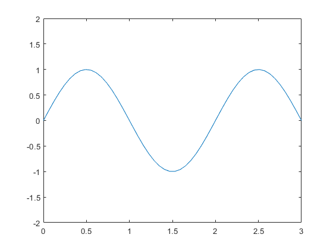
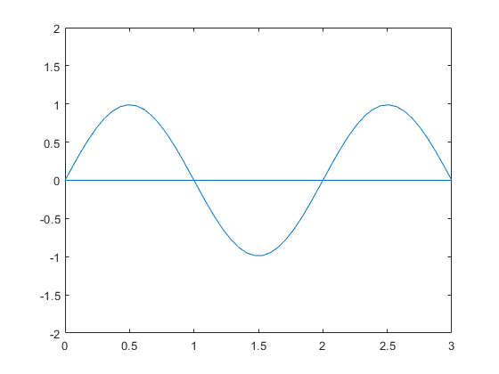
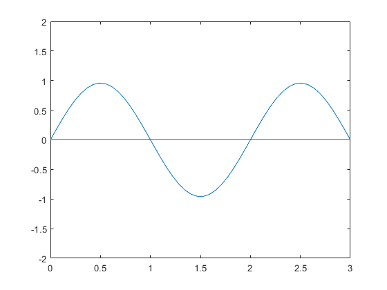

FiniteDifference.m
This function is written to simulate a standing wave in 1 dimensional space with the Finite Difference Method.
Contents
- Declared Input Values
- Create Initial Input
- Stability Checking
- Update Loop in Time
- Capture Frames for .GIF Output
- Finite Difference Update Equation
- Force Function to be 0 at Boundaries
- Swap Function Arrays
- Central1DFiniteDiff(speed, deltaT, deltaX, funcAheadX, func, funcBehindX, funcBehindT)
- SineInput(Cycles, Xfinal, Xinitial, NumberOfPoints)
Declared Input Values
close all; % Spacial Inputs initialX = 0; finalX = 3; Npoints = 50; %number of points between the initial and final X Ncycles = 1.5; %number of full sine cycles %set inputs for the time initialTime = 0; finalTime = 5; NtimePoints = 4; % Group Velocity of the Wave PropagationSpeed = 300; tDelta = (finalTime-initialTime)/NtimePoints; xDelta = (finalX-initialX)/Npoints; %filename of gif output of the program filename = 'output.gif'; %delay value between each frame of the gif FrameDelay = 0; h = figure; x = linspace(initialX,finalX,Npoints);
Create Initial Input
Also create arrays for the function which we use as pastFunc -> f(x,t-1) func -> f(x, t) nextFunc -> f(x,t+1)
func = SineInput(Ncycles, finalX, initialX, Npoints); nextFunc = zeros(length(func)); pastFunc = zeros(length(func));
Stability Checking
This is meant to check the stability of the Finite Difference Function across every update in time. This is done by using the Courant-Friedrichs-Lewy (CFL) Condition. Because this function is in 1 dimension then the CFL number must be <= 1 or else the function is proven to be unstable. When the program finds out that the given values are unstable then the program will ask for a CFL constant and if a value is valid (i.e. <= 1) then the velocity of the function will be scaled to fit the given CFL from the user.
CFL = (PropagationSpeed*tDelta)/xDelta; if CFL > 1 fprintf('Your inputs will create an unstable system. Speed will be automatically adjusted for stability\n\n'); prompt = 'Enter desired CFL: '; %NOTE THIS IS COMMENTED OUT SO THE PUBLISH CAN RUN %desiredCFL = input(prompt); %THIS IS A DUMMY VARIABLE FOR THE PUBLISH TO RUN desiredCFL = 0.75; if desiredCFL <= 1 PropagationSpeed = (desiredCFL*xDelta)/tDelta; else fprintf('Not a valid CFL. Exiting Program\n'); return end end
Your inputs will create an unstable system. Speed will be automatically adjusted for stability
Update Loop in Time
for t = 1:(NtimePoints)
%plot the new output plot(x, func); %This would have to be adjusted if amplitude is adjusted ylim([-2 2]);  

Capture Frames for .GIF Output
drawnow
% Capture the plot as an image
frame = getframe(h);
im = frame2im(frame);
[imind,cm] = rgb2ind(im,256);
% Write to the GIF File
if t == 1
imwrite(imind,cm,filename,'gif', 'Loopcount',inf);
else
imwrite(imind,cm,filename,'gif','WriteMode','append');
end
Finite Difference Update Equation
Note: the update equation must be multiplied by 0.5 and the f(x,t+1) for the initial time must be set to 0. This must be done for the first update to be correct.
for n = 2:(Npoints-1) if t == 1 nextFunc(n)= 0.5*Central1DFiniteDiff(PropagationSpeed, tDelta, xDelta, func(n+1), func(n), func(n-1), 0); else nextFunc(n) = Central1DFiniteDiff(PropagationSpeed, tDelta, xDelta, func(n+1), func(n), func(n-1), pastFunc(n)); end end
Force Function to be 0 at Boundaries
nextFunc(1) = 0;
nextFunc(end) = 0;
Swap Function Arrays
Future Array (t+1) -> Present Array (t) Present Array (t) -> Past Array (t-1) then delay if needed
pastFunc = func;
func = nextFunc;
pause(FrameDelay);
end
Central1DFiniteDiff(speed, deltaT, deltaX, funcAheadX, func, funcBehindX, funcBehindT)
speed - velocity of the wave deltaT - change in time between the points of the function deltaX - change in space between the points of the function funcAheadX - f(x+1,t) func - f(x,t) funcBehindX - f(x-1,t) funcBehindT - f(x,t-1)
This is the update equation for the 1D standing wave with the Finite Difference Method. The equation is based on the acceleration of the wave in discrete points. This equation itself would have to be adjusted for the initial run of the function from t0 to t1; for that process the funcBehindT will be set to 0 and the output of this function must be multiplied by 0.5
function output2 = Central1DFiniteDiff(speed, deltaT, deltaX, ... funcAheadX, func, funcBehindX, funcBehindT) arguments speed (1,:) {mustBeNumeric, mustBeFinite, mustBePositive} deltaT (1,:) {mustBeNumeric, mustBeFinite} deltaX (1,:) {mustBeNumeric, mustBeFinite} funcAheadX {mustBeNumeric, mustBeFinite} func {mustBeNumeric, mustBeFinite} funcBehindX {mustBeNumeric, mustBeFinite} funcBehindT {mustBeNumeric, mustBeFinite} end output2 = (((speed^2)*(deltaT^2))/(deltaX^2))*(funcAheadX ... - 2*func + funcBehindX) + 2*func - funcBehindT; end
SineInput(Cycles, Xfinal, Xinitial, NumberOfPoints)
Cycles - How many full cycles the output array must complete in the given amount of space Xfinal - the value of the final point in space of the array Xinitial - the value of the initial point in the space of the array NumberOfPoints - how many discrete points the output array must have
Creates a input for the Finite Difference update equation to use as the initial condition of the function. This input is a simple sine wave that is fixed to be 0 at the boundaries of the given space
function output = SineInput(Cycles, Xfinal, Xinitial, NumberOfPoints) arguments Cycles (1,:) {mustBeNumeric, mustBeFinite, mustBePositive} Xfinal (1,:) {mustBeNumeric, mustBeFinite} Xinitial (1,:) {mustBeNumeric, mustBeFinite} NumberOfPoints (1,:) {mustBeNumeric, mustBeFinite, mustBePositive} end x = linspace(Xinitial,Xfinal,NumberOfPoints); output = sin(((Cycles*2*pi)/Xfinal)*(x-Xinitial)); end